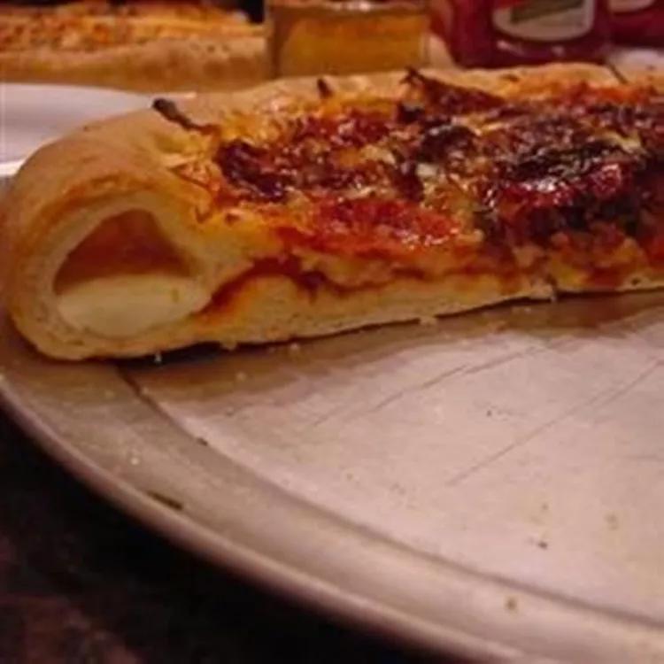

Pizza

Fancy Pizza with a lot of meat and Cheese!
This is the best Pizza you will ever eat!
Ingredients:
- 5 cups bread flour, divided, or as needed
- 1 (12 fluid ounce) can or bottle warm beer
- ¼ cup warm water
- 3 tablespoons shortening
- 1 tablespoon instant yeast
- 1 tablespoon brown sugar
- 2 teaspoons salt
- 1 teaspoon garlic powder
- 1 teaspoon onion powder
- 1 tablespoon olive oil, or to taste divided
- 2 tablespoons cornmeal, or as needed
- 16 sticks string cheese
Steps:
- Combine 4 cups bread flour, beer, water, shortening, yeast, brown sugar,
salt, garlic powder, and onion powder in the bowl of a stand mixer fitted
with a dough hook attachment; mix until combined. With the mixer running,
add remaining flour, a little at a time, until dough pulls away from the sides
of the bowl and forms into a ball, about 2 minutes.
- Lightly grease a large bowl with 1 teaspoon olive oil. Place dough into the bowl.
Cover with a clean towel and let rise until doubled in size, about 1 hour.
- Grease 2 pizza pans with remaining 2 teaspoons olive oil; dust with cornmeal.
- Punch dough down gently and divide into 2 equal portions. Place each portion
onto a prepared pan. Cover and let rest for about 5 minutes.
- Stretch each dough out 1 inch past the edge of the pan.
If dough shrinks back when stretched, cover and let rest for 5 more minutes before stretching again.
- Arrange 8 sticks cheese, ends touching, around the edge of 1 pan.
Fold overhang over cheese and press dough to seal. Repeat with the second pan.
- Now you can add some more cheese and put it in the stove for about 20 min at 200 degrees Celsius.
- Time to eat now!
Now I am hungry and want Pizza...